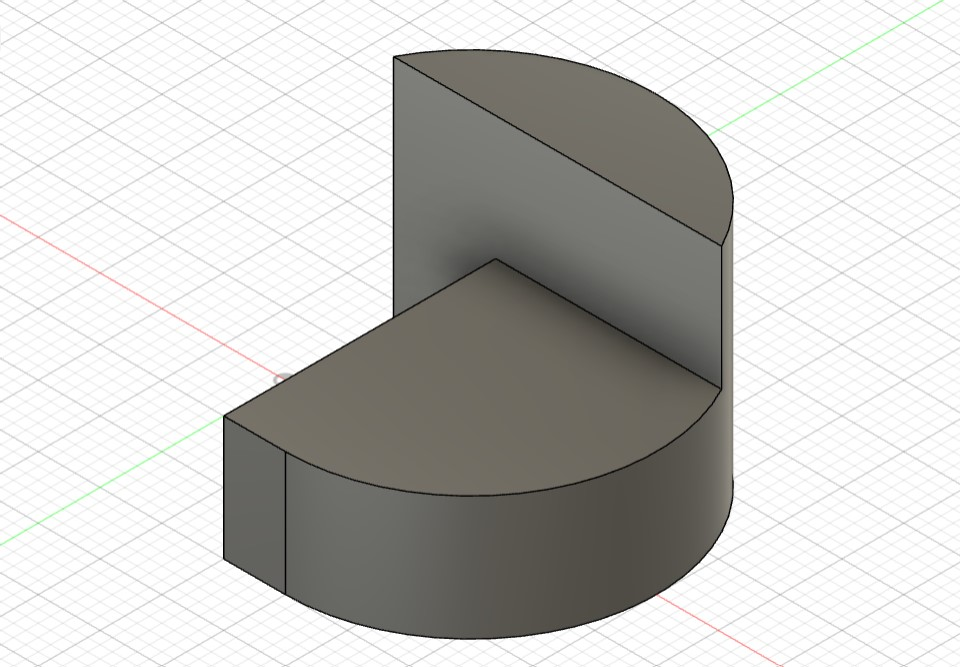
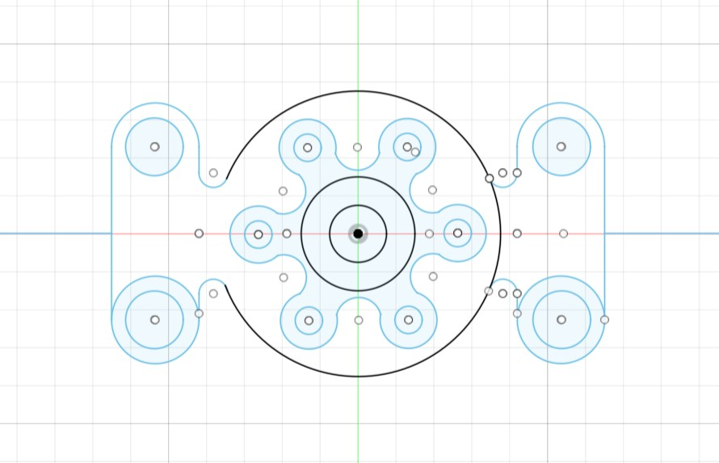
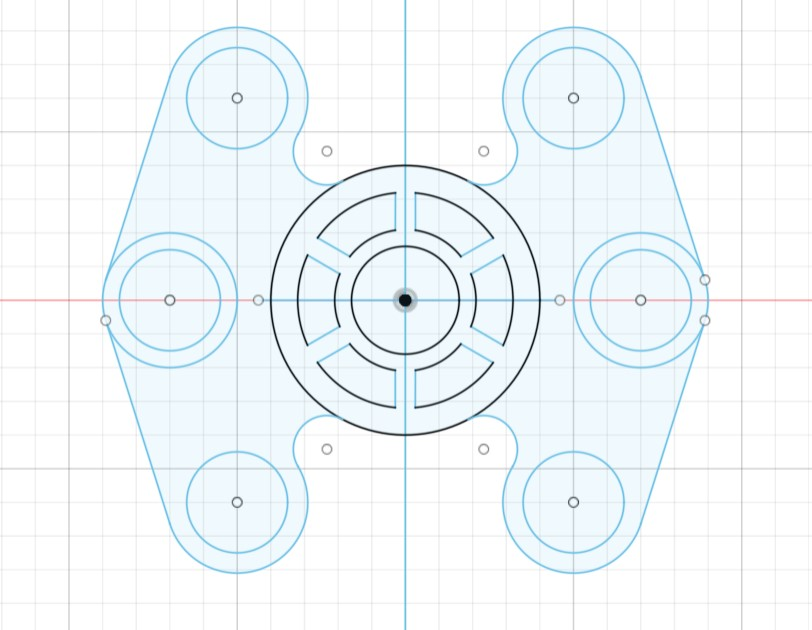

Welcome to our Computer Aided Designs page! Here, you'll find information and resources about various CAD assignments.
About Fusion 360
Sure! Fusion 360 is a cloud-based 3D modeling software developed by Autodesk. It's used for designing, engineering, and manufacturing products. It offers tools for CAD (Computer-Aided Design), CAM (Computer-Aided Manufacturing), and CAE (Computer-Aided Engineering) in a single platform, making it easier for designers and engineers to collaborate and bring their ideas to life.
Assignment 1
Basic about Fusion 360 Fusion 360 is a versatile 3D modeling software that allows users to create designs using various basic elements such as planes, angles, shapes, and surfaces. In Fusion 360, you can define planes to sketch on, which act as flat surfaces to create your designs. Angles and shapes can be easily manipulated and adjusted to fit your design requirements. The software provides intuitive tools for drawing and sketching, enabling you to create precise and detailed models. Additionally, Fusion 360 offers powerful surfacing capabilities, allowing you to create complex curved and organic shapes. With its user-friendly interface and robust set of tools, Fusion 360 is ideal for both beginners and professionals in the design and engineering fields.
Operations
1. Extrude: Extrude is one of the fundamental operations in Fusion 360 used for creating 3D shapes by adding or removing material. With the Extrude command, you can turn 2D sketches into 3D objects by pulling or pushing them in the desired direction.
2. Trim: The Trim command in Fusion 360 allows you to remove unwanted portions of geometry from your model. It enables precise editing by trimming or extending curves, surfaces, or solids to meet specific design requirements.
3. Line: The Line tool is used to create straight lines in Fusion 360. It is commonly used for sketching and drawing basic shapes or profiles that serve as the foundation for more complex 3D models.
4. Revolve: Revolve is a modeling operation that revolves a 2D sketch profile around an axis to create a solid or surface geometry. It is particularly useful for creating symmetrical objects such as gears, screws, or cylindrical components.
5. Fillet: Fillet is a command used to create rounded edges or corners on 3D models. It adds a smooth transition between two intersecting surfaces, improving the aesthetics and functionality of the design.
6. Chamfer: Similar to Fillet, the Chamfer command is used to create beveled edges or corners on 3D models. It removes sharp edges by cutting a bevel along the edge of a solid object, resulting in a more polished appearance.
Assignment 2
 
2D designs
In Fusion 360, creating 2D designs starts with sketching on a plane. You begin by selecting a plane where you want to draw, then use sketching tools like lines, arcs, circles, and rectangles to create your 2D shapes. These sketches can be dimensioned to ensure accurate sizes and positions. Fusion 360 also provides constraints to maintain relationships between different elements of your design, ensuring they remain aligned or at specified angles. Once your 2D sketch is complete, you can use it as a basis for creating 3D models by extruding or revolving the sketch to add depth and form.
Assignment 3


3D designs
Creating 3D designs in Fusion 360 involves a few key steps. First, you'll start by defining a plane or surface to sketch your design on. Then, use the sketching tools to draw your 2D shapes and profiles. After creating your sketches, you can extrude, revolve, or sweep them to give them depth and turn them into 3D objects. Fusion 360 provides a variety of modeling tools like fillet, chamfer, and shell to refine and modify your designs. You can also use direct modeling techniques to push, pull, and manipulate the geometry directly. As you work, Fusion 360's parametric modeling capabilities allow you to easily make changes to your design by adjusting dimensions or parameters. Finally, you can apply materials, textures, and appearances to give your 3D design a realistic look.
Assignment 4


Introduction to Drawing in Fusion 360
Drawing in Fusion 360 involves creating 2D sketches that serve as the foundation for 3D models. These sketches define the profiles and shapes of objects, which can then be extruded, revolved, or lofted to create solid or surface geometry. Drawing in Fusion 360 is an essential part of the design process, allowing users to visualize and iterate on their ideas before moving on to 3D modeling.
Projections: In technical drawing, projections refer to the method of representing a 3D object in a 2D space. There are two primary types of projections: orthographic projection and perspective projection. Orthographic projection is commonly used in engineering drawings and involves projecting the object onto a series of 2D planes (e.g., front, top, side) without accounting for perspective distortion.
Front View: The front view is a 2D representation of the front face of a 3D object, as if you were looking directly at it from the front. It shows the height and width of the object but not its depth. In engineering drawings, the front view is often the primary view used to convey the overall shape and features of the object.
Top View: The top view is a 2D representation of the top surface of a 3D object, as if you were looking down on it from above. It shows the length and width of the object but not its height. The top view is useful for showing the layout and arrangement of features on the top surface of the object.
Isometric View: Isometric view is a 3D representation of an object where all three axes (x, y, z) are equally foreshortened, resulting in a distorted but visually appealing representation. Isometric views are often used in technical drawings to provide a more comprehensive understanding of the object's shape and structure.
Assignment 5
PROJECT 1
Creating a 4-stroke engine design in Fusion 360 involves several steps, starting with defining the basic components such as the cylinder, piston, crankshaft, and valves. Begin by sketching the cylinder and piston to establish their dimensions and positions. Next, design the crankshaft, ensuring that it aligns with the piston's movement. Add the intake and exhaust valves to the cylinder head, positioning them accurately for proper airflow. Incorporate the camshaft to control the valve timing. Finally, assemble these components together to form the complete engine assembly. Fusion 360's parametric modeling and assembly tools make it easier to modify and adjust the design as needed, allowing you to refine your 4-stroke engine design effectively.
PROJECT 2
Creating a knuckle joint design in Fusion 360 involves a few key steps. Start by sketching the basic shapes and dimensions of the joint parts using the sketch tools. Typically, you'll sketch the main body and the pin that will act as the pivot point. Use the 'Extrude' tool to give these sketches thickness and turn them into 3D objects. Next, create a hole or slot where the pin will fit into the main body of the joint. You can use the 'Hole' or 'Slot' tool for this. Ensure that the dimensions of the hole or slot match the pin's dimensions for a snug fit. Finally, add any necessary fillets or chamfers to smooth out the edges and improve the joint's functionality. Once you're satisfied with the design, you can assemble the parts to see how they interact and make any necessary adjustments. With Fusion 360's tools and features, creating a knuckle joint design becomes a straightforward process.

PROJECT 3
Creating a space shuttle design in Fusion 360 involves several steps to capture its complex shape and functionality. Start by setting up reference planes to sketch the shuttle's basic profile. Utilize sketching tools to draw the body, wings, and other structural components. For the detailed parts like engines and thrusters, use a combination of primitive shapes and surfacing tools to sculpt the required forms. Fusion 360's assembly environment allows you to assemble these components together, ensuring proper fit and alignment. Don't forget to incorporate features like windows, hatches, and landing gear using additional sketches and modeling tools. Throughout the process, use Fusion 360's analysis tools to check for interference and ensure the design meets the required specifications. Once your design is complete, you can generate drawings, simulations, and renderings to visualize and validate your space shuttle design.